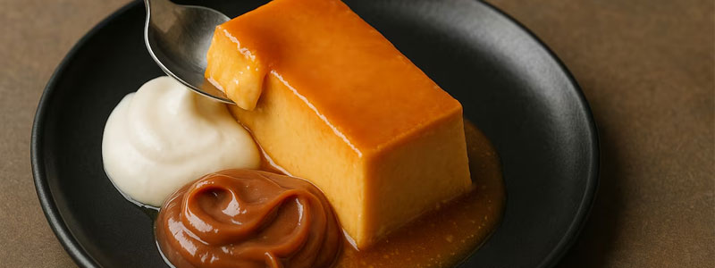
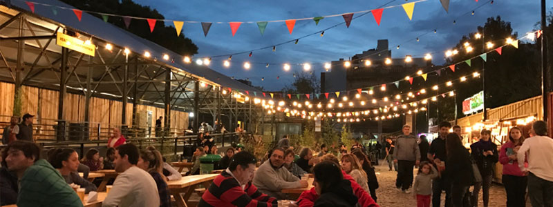

Donde comer
En este buscador vas a poder filtrar por nombre, tipo de establecimiento y barrio


En este buscador vas a poder filtrar por nombre, tipo de establecimiento y barrio
En Buenos Aires vas a encontrar platos típicos y comida del todo el mundo

Conocé los patios y Mercados en donde podés disfrutar de la mejor gastronomía de la ciudad